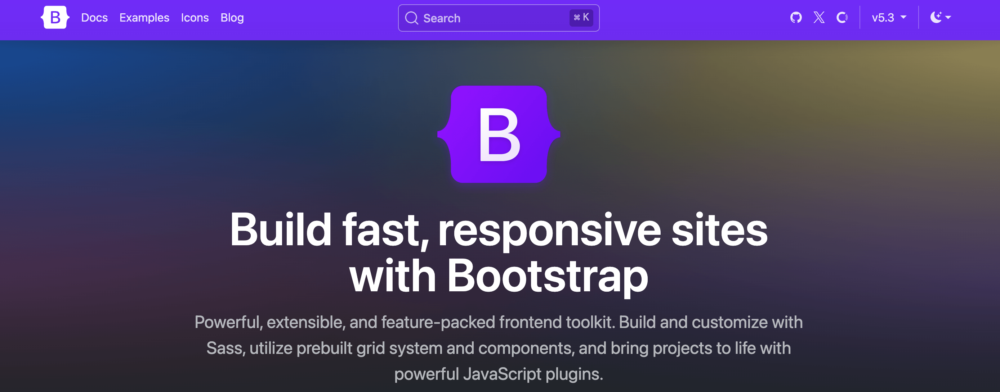
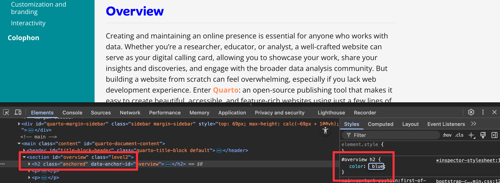
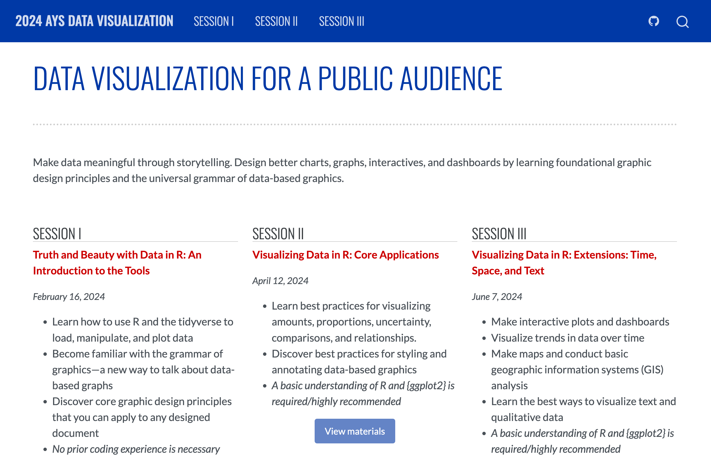
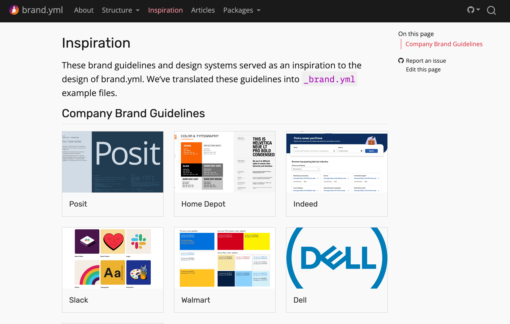

05:00
Customization
and branding
Your turn
To keep everyone on the same page, we’ll play with quarto-websites-exercise-site_2025-10
But keep your playground site from yesterday handy!
Themes
Bootstrap
Quarto uses the popular Bootstrap library for HTML structure and CSS styles.
Bootstrap
You can use Bootstrap components and classes for special styling
↓

Bootswatch themes
Quarto includes 25 themes from Bootswatch:
- default
- cerulean
- cosmo
- cyborg
- darkly
- flatly
- journal
- litera
- lumen
- lux
- materia
- minty
- morph
- pulse
- quartz
- sandstone
- simplex
- sketchy
- slate
- solar
- spacelab
- superhero
- united
- vapor
- yeti
- zephyr
Changing themes
Specify the custom theme under theme in the YAML settings:
Your turn
- Go to bootswatch.com and explore the different themes there (use the top navigation bar).
- Preview your site, then try changing different Bootswatch themes in
_quarto.yml.
07:00
CSS and Sass
Theme options
Sometimes we want to change theme settings:
- Fonts
- Colors
- Aligment
- Spacing
Basic theme options
Quarto automatically supports some common Bootstrap theme options
Total control with CSS
Crash course in CSS
HTML elements can have IDs and classes:
- IDs are unique on the page
- Shorthand:
#my-section
- Shorthand:
- Classes aren’t unique and can be repeated
- Shorthand:
.special
- Shorthand:
/* All H2s */
h2 {
color: red;
}
/* All elements with id my-section */
/* This includes non H2s */
#my-section {
color: red;
}
/* All H2s with id my-section */
h2#mysection {
color: red;
}
/* All elements with class .special */
.special {
font-style: italic;
}
/* All H2s with class .special */
h2.special {
font-style: italic;
}Nesting
Browser inpsector
Explore HTML and CSS right from your browser!
Browser inpsector
Edit and tinker with styles
Browser inpsector
See which rule applies
Your turn
- Preview your site
- Use the browser inspector to select a heading
- Create a CSS style that targets that heading and makes it
- red (
color) and - italic (
font-style) and - 30px (
font-size)
- red (
- Bonus: Those in-browser edits will disappear if you refresh the page. See if you can figure out how to put them in your website. (Hint!)
05:00
Sass: CSS, but fancier
@import url('https://fonts.googleapis.com/css2?family=Roboto:ital,wght@0,100..900;1,100..900&display=swap');
/*-- scss:defaults --*/
/* Built-in Bootstrap variables */
$h2-font-size: 1.6rem !default;
$headings-font-weight: 500 !default;
$font-family-sans-serif: Roboto;
/* Your own variables */
$my-neat-red: #e21818;
/*-- scss:rules --*/
#quarto-sidebar h2 {
font-family: Roboto;
color: $my-neat-red;
/* Magically compiles to #quarto-sidebar h2 a:hover */
a:hover {
color: #d1c81d;
}
}Bootstrap Sass variables
There are so many!
- Quarto lists these as the most typical
- Bootstrap technically has all these
- Here’s a filterable table of everything
Using CSS/Sass with Quarto
Some examples:
Our turn
Create a SCSS file and make a bunch of rules!
05:00
Branding
CSS is a little inconvenient
- HTML, slides, and dashboards all use slightly different underlying HTML
- No easy way to reuse the colors and typography from your CSS customizations in R and Python plots or in PDF documents
- Hard to share consistent, resusable themes with others in your organization (or with the world)
Style guides
Style guides
Style guides
Matching style with CSS
You can recreate styles with CSS (site; custom.scss)

Unified branding with a simple YAML file
Create reports, apps, dashboards, plots and more that match your organization’s brand guidelines with a single _brand.yml file.
Learn more: https://posit-dev.github.io/brand-yml/
1. Define branding in a single _brand.yml file.
2. Apply that branding across almost all Quarto formats.
_brand.yml elements
meta: Identifying information, name of the company, URLs, etc.logo: Files or links to the brand’s logoscolor: Colors in the brand’s color palettetypography: Fonts for different elementsdefaults: Additional context-specific settings
_brand.yml structure
_brand.yml
meta:
name: Urban Institute
link:
home: https://urbaninstitute.github.io/graphics-styleguide/
logo:
images:
icon:
path: img/urban.png
alt: Urban Institute logo
small: img/urban-sm.png
color:
palette:
blue: "#1696d2"
gray-light: "#d2d2d2"
black: "#000000"
yellow: "#fdbf11"
magenta: "#ec008b"
green: "#55b748"
gray-dark: "#5c5859"
red: "#db2b27"
orange: "#e88e2d"
white: "#ffffff"
background: white
foreground: gray-dark
primary: blue
secondary: yellow
dark: black
typography:
fonts:
- family: Lato
source: google
weight: [400, 700]
- family: Jost
source: google
weight: [400, 700]
base:
family: Lato
weight: 400
headings:
family: Jost
weight: 700
link:
color: primary
decoration: none
defaults:
bootstrap:
functions: # string with SCSS functions
defaults: # list of Bootstrap Sass variables to override
link-hover-color: $brand-magenta
mixins: # string with SCSS mixins
rules: | # string with SCSS rules
#quarto-content h2, #quarto-content h3 {
text-transform: uppercase;
letter-spacing: 1px;
}
.content .highlight {
color: $brand-yellow;
}
.navbar-title {
font-family: Jost;
font-weight: 700;
}Enabling _brand.yml in Quarto
- Define branding in
_brand.yml. - Save in the root directory of your Quarto project.
Quarto will detect the presence of _brand.yml and automatically apply the brand to all documents of the supported formats in the project.
If your brand file has a different name or lives in a subdirectory, use the brand key.
Disable _brand.yml
To turn off _brand.yml for a document, use brand: false.
Your turn
There is a file named
urban_institute.yml. Make a copy of it, rename it to_brand.yml, and rerender your site. What changes?Modify some of the variables in the
_brand.ymlfile and rerender to see how your site changes. Explore the brand.yml documentation and see what other settings you can adjust.You can reset the file by copying and pasting it from here.
05:00
Use _brand.yml in Markdown
Access some _brand.yml values in Quarto documents with a shortcode
↓
The site’s main color is #d7433b
Use _brand.yml in Sass
Access some _brand.yml values with the $brand-* prefix
Use _brand.yml in R and Python
Access and apply specific brand elements
Theme helpers
The {quarto} package contains theme helpers that apply branding to plots
R + {ggplot2} and Python + plotnine documentation
Example plot
library(tidyverse)
library(brand.yml)
brand <- read_brand_yml("_brand.yml")
brand_theme <- quarto::theme_brand_ggplot2("_brand.yml") +
theme(
text = element_text(family = brand$typography$fonts[[1]]$family, size = 11)
)
ggplot(mpg, aes(x = displ, y = hwy, color = drv)) +
geom_point() +
labs(title = "A plot") +
scale_color_manual(
values = c(
brand$color$palette$blue,
brand$color$palette$black,
brand$color$palette$yellow
)
) +
brand_themeYour turn
In the first code chunk of
01-exercise.qmd, replacetheme_minimal()withtheme_brand_ggplot2(). You will need to supply a brand file path ("_brand.yml").Re-render and see what changes.
Change the
foregroundandbackgroundcolors in_brand.ymland rerun the code to create the plot. What changes?
05:00
Your turn
In
01-exercise.qmd, read in_brand.ymlwithread_brand_yml()from the {brand.yml} package. Store it as a variable namedbrand.Change the color of the points to the brand’s
bluecolor and the line to the brand’smagentacolor. You’ll use code that looks something like this:Bonus task! Map a variable from the dataset to the color aesthetic and change the legend to use colors from the brand.
05:00
Make your own _brand.yml
- In RStudio, go to File > New File > Text file
- In Positron or VS Code, use the Explorer panel to add a new file.
Save the file as _brand.yml
Or create a Brand Extension for sharing and distributing your brand
Don’t reinvent the wheel!
DO NOT try to write a _brand.yml from scratch!
Look at the “Inspiration” page!
Your turn
Create a brand file for yourself, your project, or your organization.
Don’t try to do this from scratch! Use these resources:
05:00
What’s next?
Course outline
- ✅
Intro to Quarto - ✅
Creating basic websites - ✅
Advanced website features - ✅
Publishing - ✅
Customization and branding - Interactivity